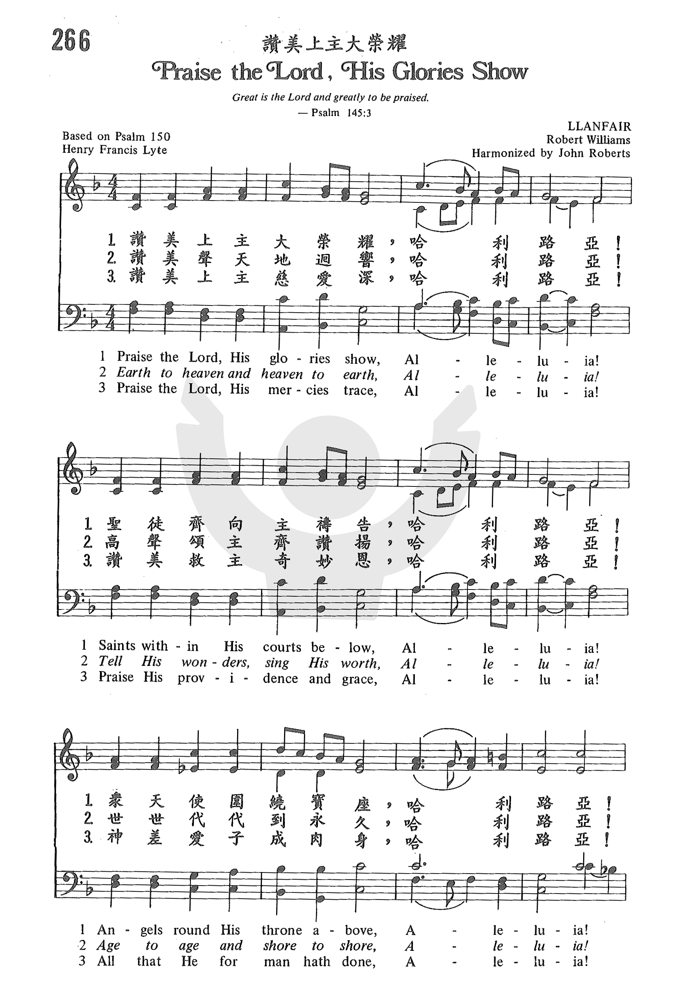
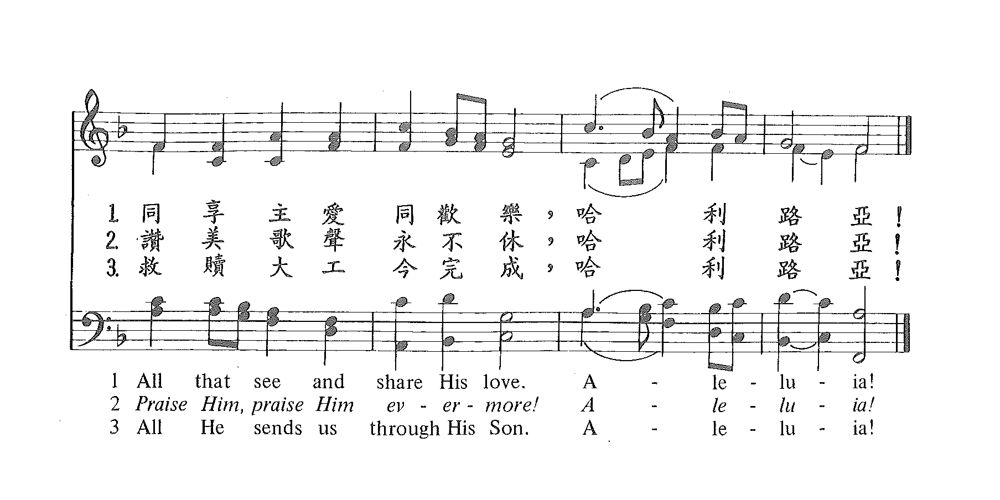

|
|
|
|
1 Praise the Lord! God’s glories show, Alleluia! 2 Earth to heaven exalt the strain, Alleluia! 3 Strings and voices, hands and hearts, Alleluia! |
赞美上主大荣耀 |
|
https://www.zanmeishige.com/tab/25633.html?songbook=1&index=266


|
|
|
|
|

https://youtu.be/Y0caTABLpME -
Praise the Lord! His Glories Show - Mormon Tabernacle Choir https://youtu.be/MnqxIJo7syE
| Short Name: | Henry Francis Lyte |
| Full Name: | Lyte, Henry Francis, 1793-1847 |
| Birth Year: | 1793 |
| Death Year: | 1847 |
Lyte, Henry Francis,

M.A., son of Captain Thomas Lyte, was born at Ednam, near Kelso, June 1, 1793, and educated at Portora (the Royal School of Enniskillen), and at Trinity College, Dublin, of which he was a Scholar, and where he graduated in 1814. During his University course he distinguished himself by gaining the English prize poem on three occasions. At one time he had intended studying Medicine; but this he abandoned for Theology, and took Holy Orders in 1815, his first curacy being in the neighbourhood of Wexford. In 1817, he removed to Marazion, in Cornwall. There, in 1818, he underwent a great spiritual change, which shaped and influenced the whole of his after life, the immediate cause being the illness and death of a brother clergyman. Lyte says of him:—
"He died happy under the belief that though he had deeply erred, there was One whose death and sufferings would atone for his delinquencies, and be accepted for all that he had incurred;"
and concerning himself he adds:—
"I was greatly affected by the whole matter, and brought to look at life and its issue with a different eye than before; and I began to study my Bible, and preach in another manner than I had previously done."
From Marazion he removed, in 1819, to Lymington, where he composed his Tales on the Lord's Prayer in verse (pub. in 1826); and in 1823 he was appointed Perpetual Curate of Lower Brixham, Devon. That appointment he held until his death, on Nov. 20, 1847. His Poems of Henry Vaughan, with a Memoir, were published in 1846.
His own Poetical works
were:—
(1) Poems chiefly Religious 1833; 2nd ed.
enlarged, 1845. (2) The Spirit of the Psalms, 1834,
written in the first instance for use in his own Church at Lower Brixham,
and enlarged in 1836; (3) Miscellaneous Poems (posthumously)
in 1868. This last is a reprint of the 1845 ed. of his Poems,
with "Abide with me" added. (4) Remains, 1850.
Lyte's Poems have been somewhat freely
drawn upon by hymnal compilers; but by far the larger portion of his hymns
found in modern collections are from his Spirit of the
Psalms. In America his hymns are very popular. In many instances,
however, through mistaking Miss Auber's (q. v.) Spirit of
the Psalms, 1829, for his, he is credited with more than is his due.
The Andover Sabbath Hymn Book, 1858, is specially at
fault in this respect. The best known and most widely used of his
compositions are "Abide with me, fast falls the eventide;” “Far from my
heavenly home;" "God of mercy, God of grace;" "Pleasant are Thy courts
above;" "Praise, my soul, the King of heaven;" and "There is a safe and
secret place." These and several others are annotated under their respective
first lines: the rest in common use are:—
Notes
Praise the Lord, His glories show . H. F. Lyle. [Ps. cl.] Lyte's original version of Ps. cl., appeared in his Spirit of the Psalms, 1834, in 2 stanzas of 8 lines, and his revised version in the enlarged edition of the same work in 1836. The two texts may be distinguished by st. ii. 11. 1, 2 thus:—
1834. "Earth to heaven, and heaven to earth
Tell his wonders, sing His worth."
1836. "Earth, to heaven exalt the strain,
Send it, heaven, to earth again."
Both texts are in common use, but the first, as in the Society for Promoting Christian Knowledge Church Hymns, 1871; the Hymnal Companion, 1876, and many others, is the more widely used of the two.
--John Julian, Dictionary of Hymnology (1907)
Tune Information
| Title: | LLANFAIR |
| Composer: | Robert Williams (1817) |
| Meter: | 7.7.7.7 with alleluias |
| Incipit: | 11335 43254 34321 |
| Key: | F Major |
| Short Name: | Robert Williams |
| Full Name: | Williams, Robert, 1782-1821 |
| Birth Year: | 1782 |
| Death Year: | 1821 |
Robert Williams (b. Mynydd Ithel, Anglesey, Wales, 1781; d. Mynydd Ithel, 1821) lived on the island of Anglesey. A basket weaver with great innate musical ability, Williams, who was blind, could write out a tune after hearing it just once. He sang hymns at public occasions and was a composer of hymn tunes.
Bert Polman
Notes
LLANFAIR is usually attributed to Welsh singer Robert Williams (b. Mynydd Ithel, Anglesey, Wales, 1781; d. Mynydd Ithel, 1821), whose manuscript, dated July 14, 1817, included the tune. Williams lived on the island of Anglesey. A basket weaver with great innate musical ability, Williams, who was blind, could write out a tune after hearing it just once. He sang hymns at public occasions and was a composer of hymn tunes.
LLANFAIR was first published with a harmonization by John Roberts in John Parry's Peroriaeth Hyfryd (Sweet Music) (1837). The tune has been associated with the Wesley/Cotterill text since its publication with the text in The English Hymnal (1906). LLANFAIR is actually a common Welsh name, but some scholars believe that in this case the tune's name refers to the Montgomery County [sic Anglesey County] village in Wales where Williams was born.
A rounded bar form (AABA) tune, LLANFAIR features the common Welsh device of building a melody on the tones of the tonic triad. The tune is in a major key (not all Welsh tunes are in minor keys!). The melismas give fitting shape to the "alleluias." Use brisk accompaniment for this cheerful tune. LLANFAIR has a similar pattern to that of EASTER HYMN (388); see suggestions there for antiphonal style performance.
--Psalter Hymnal Handbook, 1988
{kind=link}
{kind=link}
.jpg){kind=link}
{kind=link}